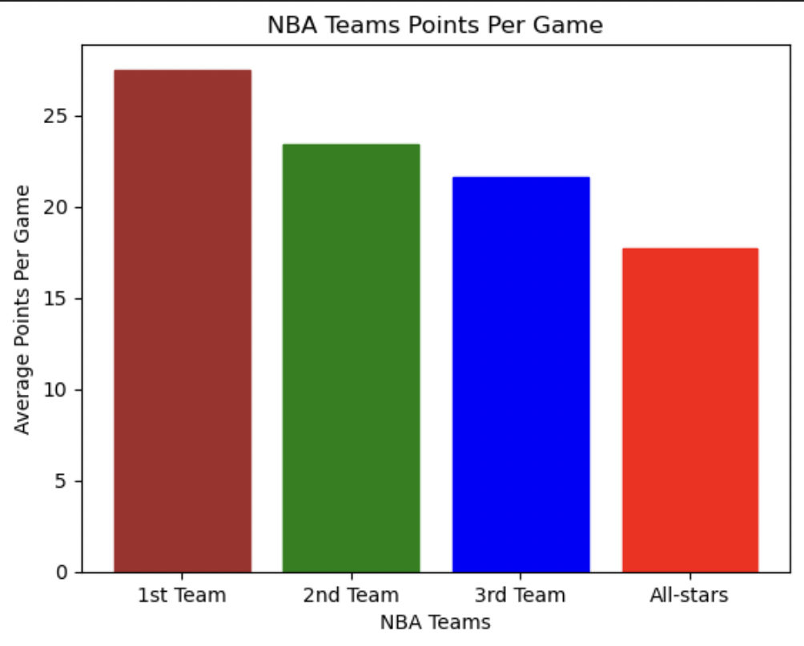
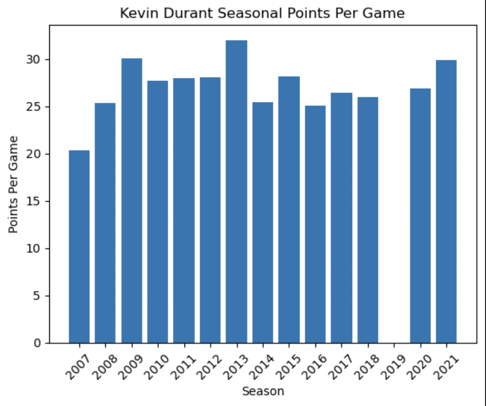

Notable projects
Project 1 (2023 - Present)
Description
An analysis on the NBA season 2007-2022 focusing on player statistics
Findings:
- The average it takes for a player to make into All NBA Selection is 10.3 years of experience
- For players in the All NBA First Team, they scored an average of 27.5 ppg
- For players in the All NBA Second Team, they scored an average of 23.4 ppg
- For players in the All NBA Third Team, they scored an average of 21.6 ppg
- For players in the All-Star Team, they scored an average of 17.7 ppg
All NBA Selection
- The season 2013 is Kevin Durant highest points per game season with 32.0 points per game
- Kevin Durant did not have any PPG record in his 2019 season due to his Achilles injury
Kevin Durant
Visuals


Project 2 (2023 - Present)
Description
An analysis on different NYC boroughs' car collision statistics as well as the most frequent collision type in each borough.
Findings:
NYC Car Accident History
- The NYC borough with the most car collisions is Brooklyn with a total of 442,607 collision.
Brooklyn
- The most frequent crash hour is hour 16 (4pm)
- The least frequent crash hour is hour 3 (3am)
- The month with the most frequent crashes is July
- The month with the least frequent crashes is Feburary `
- © Ken Lam
- Design: HTML5 UP